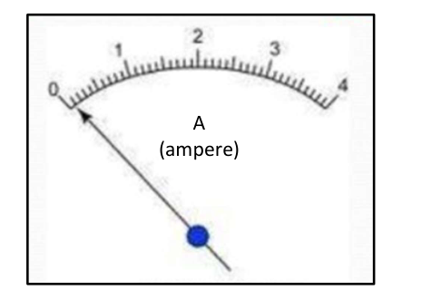
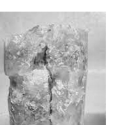
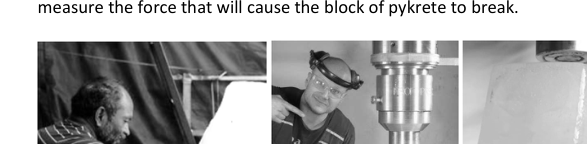

Part A: Multiple choice (8 marks)
A scientific hypothesis can be described by all of the following except:
Use this information for Questions 2 and 3. These sentences describe a person's heartbeat, pulse rate and physical activity:
A. When the intensity of a person's exercise increases, their pulse rate increases.
B. The person's pulse rate is 70 beats per minute.
C. The pulse is caused by a person's heart beating.
D. A person's pulse rate depends on the intensity of their physical activity.
Which sentence best describes an observation?
Which sentence best describes a hypothesis?
A hypothesis is a testable prediction of how the independent variable affects the dependent variable.
Planning and conducting a scientific investigation involves all of the following except:
Use this information for Questions 5 and 6. Alisson and Becker carry out an experiment in which they combine two reactants in a test tube. The next day, their colleagues Luis and Diaz use the same apparatus and reactants, under the same laboratory conditions, to carry out the same experiment.
Which of Alisson and Becker's observations is an example of quantitative data?
Luis and Diaz obtained the same results as Alisson and Becker. This raises confidence that both groups' measurements are:
Use this information for Questions 7 and 8. Trent and Andy are measuring the current in a circuit with an ammeter. Just before switching on the current, they notice the ammeter looks like this:

Name the type of error shown.
Could they compensate for this error if they used the ammeter as it is?
The needle reads 0.1 A when there is no current, so every reading is 0.1 A too high.
Section B: Short answer (27 marks)
Question 1 (15 marks)
During the Second World War, the British scientist Geoffrey Pyke proposed building warships from blocks of ice containing wood fibres. This material is known as "pykrete". Pykrete has a higher material strength than ice made from water alone.

Wood fibres used to make pykrete include:
- sawdust (from timber being sawn);
- wood chips (small pieces of larger wood, graded from millimetres to centimetres);
- paper (usually recycled), crumpled, torn into strips or cut into regular strips;
- cardboard (recycled packaging).
An investigation is proposed to compare the material strength of pykrete made from different wood fibres. The strength is measured as the force a hydraulic press exerts on a standard-sized block until it breaks.
Write one research question about the material strength of pykrete made from different wood fibres. (This is not a hypothesis.)
For example: "What is the effect of the type of wood fibre on the material strength of pykrete?" (1 mark for the IV, 1 mark for the DV).
REDuse, an office paper recycling company, is sponsoring the investigation. It plans to cut recycled paper into regular, standard-sized strips for pykrete, and wants to know whether the orientation of the strips (random, criss-crossed, aligned or crumpled) affects the material strength.
Write a hypothesis about how the orientation of the paper strips affects the material strength of pykrete.
Any orientation can be chosen, as long as it's a clear prediction (1 mark) about the DV, the material strength of the pykrete (1 mark). For example: "It is predicted that criss-crossed paper strips will result in the greatest material strength of pykrete."
Identify the variables and their data types.
Independent variable: ; data type:
Dependent variable: ; data type:
List two controlled variables in this experiment.
Any two, for example: size of the block; size of the paper strips; amount of paper (paper to water ratio); amount of water/ice; freezing temperature and time.
What type of graph would you use to plot the results?
The independent variable is categorical, so a column graph is used.

Look at the photos of a scientist loading a block of pykrete into a hydraulic press. List two possible risks of injury to the scientist.
Any two: fingers crushed by the press; the block dropped on a foot; frostbite from handling ice; eye injury from flying chunks of ice.
List two actions that could reduce the risk of injury.
Any two: eye protection (safety glasses); gloves; guards or interlocks to stop the press operating when hands are in the danger zone; safety shoes.
Question 2 (12 marks)
Orchids are flowering plants that grow in diverse habitats on every continent except on glaciers and ice-covered ground. These habitats tend to be cool, damp and shaded by trees.
Cody and Ryan are investigating the effect of the amount of shade on the number of flowers produced by a single variety of orchid. To control the experiment:
- The orchids are germinated together from seeds from the same parent plants.
- They are grown in one temperature-controlled room, with uniform lighting switched on for 12 hours a day.
- They are given the same amount of water each day.
- The average number of flowers per plant is counted 30 days after germination.
The seedlings are divided into groups of 10, and the shading is varied from 35% to 60% in steps of 5%. The results:
| Shading over plants (%) | 35 | 40 | 45 | 50 | 55 | 60 |
|---|---|---|---|---|---|---|
| Average number of flowers per plant | 3.2 | 3.9 | 4.2 | 4.5 | 4.9 | 5.2 |
On graph paper: plot the data; include a suitable title; include a suitable title and units on each axis; and draw a straight line of best fit. Describe your graph, then compare.
- Points plotted correctly (3 marks; lose 1 for 1–2 wrong, 2 for 3–4 wrong).
- A suitable title, e.g. "Average number of flowers per plant vs percentage shading" (1 mark).
- Axis titles with units: shading (%) on the horizontal axis and average number of flowers per plant on the vertical axis (1 mark).
- A straight line of best fit through the points, which can be extended back towards 20% (1 mark).
Using your trendline, estimate the number of flowers expected for orchids grown under 20% shading.
Extending the line of best fit back to 20% gives about 2 flowers per plant.
Discuss whether the estimate from part b is likely to be observed, and why.
No (1 mark): it is an extrapolation beyond the range of the data, so the trend may not continue; for example, the orchids may not survive without enough shade (1 mark).
Discuss the results of Cody and Ryan's experiment, covering: the correlation between the independent and dependent variables; and whether the trend is likely to continue as the shading keeps increasing, with a well-reasoned explanation.
- There is a strong positive correlation: the data points lie close to the trendline (1 mark).
- The trend is unlikely to continue as shading increases (1 mark),
- because too much shade would reduce the light the plants need for photosynthesis, so flowering would eventually decrease (1 mark).